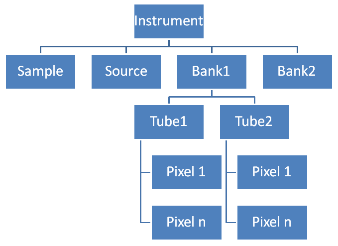

\(\renewcommand\AA{\unicode{x212B}}\)
Geometry of Position¶
What is it?¶
In Mantid we need to be able to define the position and orientation of every component within an instrument.
What is a component?¶
A component is an abstract concept that is anything that we want to define a position for, it could be a detector pixel, a whole detector bank, a sample position or the whole instrument itself. For each component we store:
A link to it’s parent component.
Position co-ordinates as a 3D Vector, internally these store the location in cartesian co-ordinates in metres, but can also be set in spherical co-ordinates. This position is the relative position compared to it’s parent.
Orientation as a quaternion. The orientation is applied after any position adjustment relative to the parent.
Subtypes of Component¶
Object Component¶
An object component is a component that has a shape. Shapes can contain a lot more information to properly define them, and therefore take more memory. Where an instrument contains a lot of instances of the same shape Mantid shares one instance of the object(shape) across all of the object components that need it.
Component Assembly¶
This component that is a logical collection of several smaller components, an example of this is a bank of detector pixels. The whole instrument itself is a Component Assembly which contains all of the other top level components in the Instrument tree.
Instrument Tree¶
 Most instruments in Mantid are defined using a tree structure allowing the top level structure objects to be reused if they are repeated in an instrument. This is an example of a simplified instrument tree, the lines show the links between the parent and child relationships of the components. Full details on how to define an instrument can be found here.
Category: Concepts